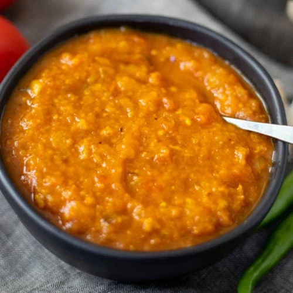

Indian Curry Base Gravy

The Base Gravy is key in producing British Indian restaurant and takeaway style Curry in the UK (BIR). Nearly all Indian restaurants and take aways will have a version of this golden delight. It is the base for nearly every popular curry on the menu, from Korma to Phaal, Bhuna to Jalfrezi as well
Ingredients
- 4lb (1.8kg) Onions
- 1 red pepper
- 2 chopped green finger chillies
- 1 sliced carrot
- 100g peeled garlic
- 100g fresh ginger
- 2 tbsp tomato puree
- 8 tbsp vegetable oil
- 2 tsp salt
- 2oz (60g) fresh coriander
- 2 tins of tomatoes
- 2 tsp coriander powder
- 2 tsp cumin powder
- 2 tsp turmeric
- 2 tsp paprika
Steps
- Peel the onions and halve and place in a very large pan (with a lid)
- Peel & slice the carrots and place in the pan
- Slice the red peppers into large chunks
- Finely slice the green chillies
- Blend the ginger & garlic (might have to add a little water and veg oil)
- Add 2 pints (1150ml water), the chopped red & green chilli peppers, salt,coriander leaf, veg oil, ginger & garlic paste to the pan and put the lid on and turn on the heat
- After 15 minutes, give it all a stir and reduce to a simmer
- After another 45 minutes, stir and turn the heat off and leave it to cool
- Blend all of it with a hand blender or use a food processor until smooth and return to the pan
- Blend the tinned tomatoes until smooth and place in a separate pan and simmer for 10 minutes (no lid) and add a little veg oil
- Add the tomato puree, paprika, coriander powder, cumin powder and turmeric to the tomatoes
- Simmer down for another 10 minutes (no lid)
- Add the tomatoes to the large pan
- Simmer on low for another 20 minutes